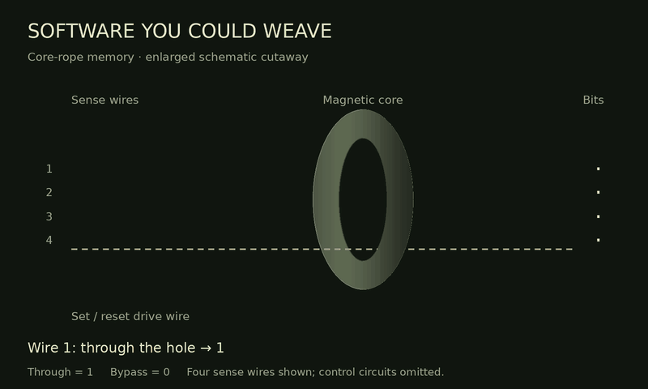

ANDY J MYERS / APOLLO ROPE LAB
Hope,
Hope,
Hope.
(Burn, Baby, Burn)
A shimmering space-age pop celebration of copper, code and the people who made the impossible practical.
Ready when you are.
Download the MP3 ↧“Temporary, I hope hope hope.”
THE NEEDLEWORK BEHIND THE MUSIC
Software you could weave.
Through the core = 1. Around it = 0.

An enlarged four-wire cutaway. Actual Apollo cores served many words; selection circuitry is omitted here.